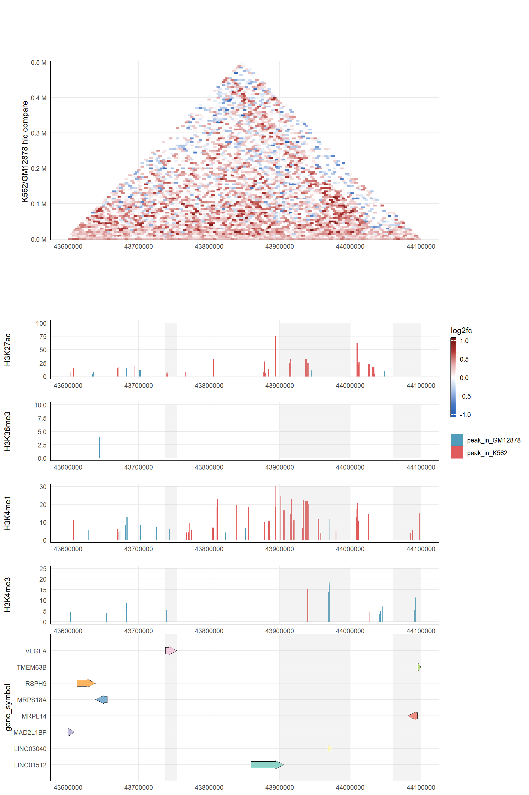
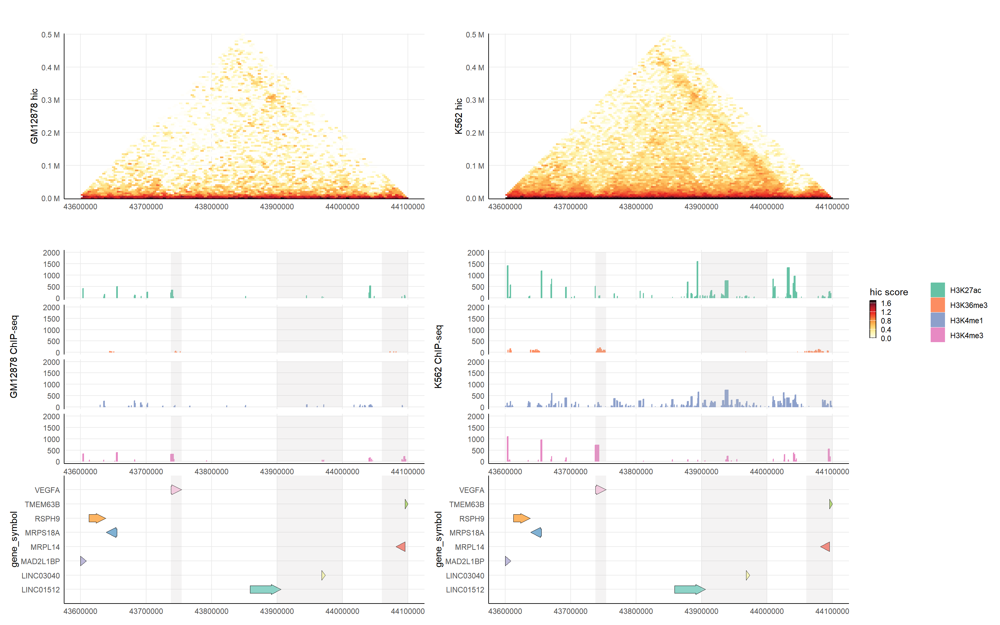

3 Cases
3.1 PBMC example
3.1.1 Marker gene heatmap
library(yulab.utils)
pload(dplyr)
pload(ggplot2)
pload(ggfun)
pload(ggtree)
pload(aplot)
pload(Seurat)
# celltype <- c("Naive CD4 T", "B", "NK")
# id <- pbmc@active.ident
# md = data.frame(cell=names(id), group=id)
# md <- md[md$group %in% celltype, ]
# md$group <- as.character(md$group)
# md <- lapply(split(md, md$group), function(x) x[1:30,]) |> rbindlist()
#
# pbmc <- pbmc[, md$cell]
pbmc <- qs::qread("data/pbmc-subset.qs")
m <- FindAllMarkers(pbmc, only.pos=TRUE)
top10 <- m %>%
group_by(cluster) %>%
dplyr::filter(avg_log2FC > 2) %>%
slice_head(n = 10)
pbmc <- ScaleData(pbmc, features = rownames(pbmc))
x <- pbmc[['RNA']]$scale.data[top10$gene,]
y <- mat2df(x) -> y
y$gene <- rownames(x)[y$row]
y$cell <- colnames(x)[y$col]
p <- ggplot(y, aes(cell, gene, fill = value)) +
geom_tile()+ scale_fill_viridis_c(name = "Gene Expression") +
theme_noxaxis() +
scale_y_discrete(position = "right") +
xlab(NULL) +
ylab(NULL)
gene_cls <- hclust(dist((x)))
cell_cls <- hclust(dist(t((x))))
gene_tree <- ggtree(gene_cls, branch.length = 'none')
cell_tree = ggtree(cell_cls, branch.length = 'none') + layout_dendrogram()
id <- pbmc@active.ident
md = data.frame(cell=names(id), group=id)
p_cell_type <- ggplot(md, aes(cell, y=1, fill = group)) +
geom_tile() +
scale_fill_brewer(palette="Set1", name = 'Cell Type') +
theme_nothing()
g <- p |> insert_left(gene_tree, width = .2) |>
insert_top(p_cell_type, height = .02) |>
insert_top(cell_tree, height = .1)
g
3.1.2 Degree of genes in the PPI network
pload(igraph)
pload(clusterProfiler)
ppi <- getPPI(top10$gene, output='igraph', taxID='9606')
deg <- stack(degree(ppi, v = V(ppi))) |> setNames(c("degree", "gene"))
p_ppi <- ggplot(deg, aes(1, gene, fill=degree, size=degree)) + geom_point(shape=21) +
scale_fill_gradientn(colors = hcl.colors(20, "RdYlGn")) + theme_nothing()3.1.3 Genes in pathways
pload(tidytree)
pload(msigdbr)
node <- c(35, 34, 32)
genes <- lapply(node, function(n) offspring(gene_tree, n, tiponly=T)$label) |>
setNames(c("CD4", "NK", "B"))
pload(clusterProfiler)
gene_set <- msigdbr(species="human", category="C2")
names(gene_set)## [1] "gs_cat" "gs_subcat"
## [3] "gs_name" "gene_symbol"
## [5] "entrez_gene" "ensembl_gene"
## [7] "human_gene_symbol" "human_entrez_gene"
## [9] "human_ensembl_gene" "gs_id"
## [11] "gs_pmid" "gs_geoid"
## [13] "gs_exact_source" "gs_url"
## [15] "gs_description"cc <- compareCluster(genes, enricher, TERM2GENE=gene_set[, c("gs_name", "gene_symbol")])
res <- cc@compareClusterResult |>
group_by(Cluster) |>
slice_head(n = 5) |>
as.data.frame()
gene2path <- lapply(res$geneID, function(x) unlist(strsplit(x, split="/"))) |>
setNames(res$Description) |>
stack() |>
setNames(c("gene", "pathway"))
pcp <- ggplot(gene2path, aes(pathway, gene)) +
geom_point(size=5, shape=21, fill = "steelblue") +
theme_minimal() +
theme_noyaxis() +
theme(axis.text.x = element_text(angle=30, hjust=1)) +
xlab(NULL) +
ylab(NULL)
gg <- g |> insert_right(p_ppi, width=.05) |>
insert_right(pcp, width=.5)
gg
3.1.4 All in one
pp <- plot_list(cell_tree, p_cell_type, heights=c(1, .5))
pp <- plot_list(gene_tree, pp, widths=c(.3, 1))
pp <- plot_list(p, pp, p_ppi, pcp, widths=c(1, .8, .05, .6))
pp <- pp + patchwork::plot_annotation(tag_levels='a')
final_plot <- plot_list(pp, gg, ncol=1, tag_levels='A', heights=c(1, 1.2))
final_plot
3.2 Oncoplot example
pload(aplotExtra)
pload(RTCGA.mRNA)
pload(RTCGA)
laml.maf <- system.file("extdata", "tcga_laml.maf.gz", package = "maftools")
laml.clin <- system.file('extdata', 'tcga_laml_annot.tsv', package = 'maftools')
laml <- maftools::read.maf(maf = laml.maf, clinicalData = laml.clin)## -Reading
## -Validating
## -Silent variants: 475
## -Summarizing
## -Processing clinical data
## -Finished in 0.260s elapsed (0.000s cpu)onco <- oncoplot(maf = laml, genes = 20)
plot_tcga_expr <- function(mRNA, genes, name = "Gene Expression") {
d = expressionsTCGA(mRNA, extract.cols = genes)
dd = gather(d, gene, expression, -c(1,2))
ggplot(dd, aes(expression, gene, fill=stat(x))) +
ggridges::geom_density_ridges_gradient() +
scale_fill_viridis_c(option="C", name = name) +
theme_minimal() +
theme_noyaxis() +
xlab(NULL) +
ylab(NULL) +
theme(legend.position='bottom')
}
onco_genes <- aplotExtra:::get_oncoplot_genes(laml)
brca <- plot_tcga_expr(BRCA.mRNA, onco_genes, "Gene Expression in TCGA\nbreast cancer patients")
ov <- plot_tcga_expr(OV.mRNA, onco_genes, "Gene Expression in TCGA\novarian cancer patients")
op <- insert_right(onco, brca, width = .6) |>
insert_right(ov, width=.6)
op
3.3 funky heatmap
library(aplotExtra)
library(tidyverse)
data("mtcars")
d <- yulab.utils::scale_range(mtcars) |>
rownames_to_column("id") |>
arrange(desc(mpg))
g1 <- funky_text(d)
g2 <- funky_bar(d, 2) + scale_fill_gradient(low = "#CC4C02", high = "#FFFFE5")
g3 <- funky_bar(d, 3) + scale_fill_gradient(low = "steelblue", high = "firebrick")
g4 <- funky_point(d, 4:7) + scale_fill_gradient(low = "#CC4C02", high = "#FFFFE5")
g5 <- funky_point(d, 8:12) + scale_fill_gradient(low = "#08519C", high = "#F7FBFF")
#funky_heatmap(data=mtcars)
fp <- funky_heatmap(g1, g2, g4, g5, options=theme_stamp())
fp
3.4 Epigenetics
In this part, we will show case of epigenetics by using aplot to integrate the visualization
of hic data, ChIP-seq data and gene track. Hic data will be manipulated and visualized by
HiContacts and HiCExperiment. ChIP-seq data will be manipulated and visualize by ChIPseeker.
Gene track will be visualized by gggenes by fetching gene information from txdb object.
aplot will show its power by combining these three parts of epigenetics result.
The purpose of this case is to show the different epigenetics characteristics of cell line GM12878(normal lymphoblastoid cell line) and cell line K562(chronic myeloid leukemia cell lines). Hic data are derived from GSM1551550(GM12878) and GSM1551618(K562). ChIP-seq data have four parts: H3K27ac, H3K4me1, H3K4me3 and H3K36me3. ChIP-seq Control data are derived from GSM733742(GM12878) and GSM733780(K562). ChIP-seq H3K27ac data are derived from GSM733771(GM12878) and GSM733656(K562). ChIP-seq H3K4me1 data are derived from GSM733772(GM12878) and GSM733692 (K562). ChIP-seq H3K4me3 data are derived from GSM733708(GM12878) and GSM733680(K562). ChIP-seq H3K36me3 data are derived from GSM733771(GSM733679) and GSM733656(GSM733714). We download the bam files and re-analyze it by using macs2 to get peak results and different peak results. Gene track visualization is implemented by using gggenes.
In order to manifest the strength of aplot, we will show the usages of aplot in two parts.
combine data is the comparison result. The comparison result of Hic data are calculated by using HiContacts::divide to get
foldchange(K562/GM12878). The comparison result of ChIP-seq data are calculated by using the bdgdiff function of macs2.
split data is to exhibit the hic data and ChIP-seq data of two cell lines individually.
All the data is pre-calculated and store in a .qs file.
library(ggplot2)
library(TxDb.Hsapiens.UCSC.hg19.knownGene)
library(aplot)
library(ChIPseeker)
library(clusterProfiler)
library(org.Hs.eg.db)
library(IRanges)
library(GenomicFeatures)
library(gggenes)
scale <- "log10"
limits <- c(0,1.7)
chr <- "chr6"
chr_hic <- "6"
x_min <- 43600000
x_max <- 44100000
txdb <- TxDb.Hsapiens.UCSC.hg19.knownGene
epigenetics_data <- qs::qread("./data/epigenetics_data.qs")
# functions to visualize gene track
getPlotGene <- function(txdb, chr, x_min, x_max, tx_id = NULL,
OrgDb = NULL){
win <- GRanges(seqnames = chr,
ranges = IRanges::IRanges(start = x_min, end = x_max))
all_genes <- GenomicFeatures::genes(txdb)
gene_df <- data.frame(subsetByOverlaps(x = all_genes, ranges = win, type = "any"))
gene_df[gene_df[, "start"] < x_min, "start"] <- x_min
gene_df[gene_df[, "end"] > x_max, "end"] <- x_max
gene_df$gene_id <- factor(gene_df$gene_id, levels = unique(gene_df$gene_id))
gene_df <- gene_df[,c("seqnames", "gene_id", "start", "end", "strand")]
colnames(gene_df)[1] <- "chromosome"
gene_df$forward <- ifelse(gene_df$strand=="+", TRUE, FALSE)
if(!is.null(OrgDb)){
require(clusterProfiler)
require(OrgDb , character.only = TRUE)
changeid <- bitr(geneID = gene_df$gene_id,
fromType = "ENTREZID", toType = "SYMBOL",
OrgDb = OrgDb)
colnames(changeid)[1] <- c("gene_id")
gene_df <- merge(gene_df, changeid)
gene_df <- gene_df[, c(2:ncol(gene_df))]
colnames(gene_df)[ncol(gene_df)] <- "gene_symbol"
}
return(gene_df)
}
plotGene <- function(df,x_min = NULL, x_max = NULL){
require(gggenes)
if(is.null(x_min)){
x_min <- min(c(df[, "start"], df[, "end"]))
}
if(is.null(x_max)){
x_max <- max(c(df[, "start"], df[, "end"]))
}
gene_p <- ggplot(df, aes(xmin = start, xmax = end,
y = gene_symbol, forward=forward, fill = gene_symbol)) +
geom_gene_arrow() +
xlim(c(x_min, x_max))+
theme_genes() +
theme(legend.position = 'none')
return(gene_p)
}3.4.1 combine data
combine_hic_p <- HiContacts::plotMatrix(epigenetics_data[["div_hic"]],
use.scores = "balanced.fc",
maxDistance = x_max - x_min,caption = FALSE,
cmap = HiContacts::bbrColors()) +
xlim(x_min, x_max) +
ylab("K562/GM12878 hic compare ") + xlab("") + labs(fill = "log2fc") +
theme(plot.title = element_text(hjust = 0.5),
axis.text.y = element_blank(),
axis.ticks.y = element_blank(),
axis.text.x = element_text(size = 9))
peak_color <- c("#E05B5B","#519CBA")
names(peak_color) <- c("peak_in_K562", "peak_in_GM12878")
H3K27ac_p <- covplot(epigenetics_data[["H3K27ac_peak"]],
weightCol="V5", chrs=chr, xlim=c(x_min, x_max),
ylab = "H3K27ac", title = "", xlab = "") +
annotate("rect", xmin = 43737946,xmax = 43754223,
ymin= 0, ymax=100, fill = "#c6c3c3", alpha= 0.2) +
annotate("rect", xmin = 43900000,xmax = 44000000,
ymin= 0, ymax=100, fill = "#c6c3c3" , alpha= 0.2) +
annotate("rect", xmin = 44060000,xmax = 44100000,
ymin= 0, ymax=100, fill = "#c6c3c3" , alpha= 0.2) +
scale_color_manual(values = peak_color) +
scale_fill_manual(values = peak_color) +
theme(strip.text.y = element_blank())
H3K36me3_p <- covplot(epigenetics_data[["H3K36me3_peak"]],
weightCol="V5", chrs=chr, xlim=c(x_min, x_max),
ylab = "H3K36me3", title = "", xlab = "") +
annotate("rect", xmin = 43737946,xmax = 43754223,
ymin= 0, ymax=10, fill = "#c6c3c3" , alpha= 0.2) +
annotate("rect", xmin = 43900000,xmax = 44000000,
ymin= 0, ymax=10, fill = "#c6c3c3" , alpha= 0.2) +
annotate("rect", xmin = 44060000,xmax = 44100000,
ymin= 0, ymax=10,
fill = "#c6c3c3" , alpha= 0.2) +
scale_color_manual(values = peak_color) +
scale_fill_manual(values = peak_color) +
theme(strip.text.y = element_blank())
H3K4me1_p <- covplot(epigenetics_data[["H3K4me1_peak"]],
weightCol="V5", chrs=chr, xlim=c(x_min, x_max),
ylab = "H3K4me1", title = "", xlab = "") +
annotate("rect", xmin = 43737946,xmax = 43754223,
ymin= 0, ymax=30, fill = "#c6c3c3" , alpha= 0.2) +
annotate("rect", xmin = 43900000,xmax = 44000000,
ymin= 0, ymax=30, fill = "#c6c3c3" , alpha= 0.2) +
annotate("rect", xmin = 44060000,xmax = 44100000,
ymin= 0, ymax=30, fill = "#c6c3c3" , alpha= 0.2) +
scale_color_manual(values = peak_color) +
scale_fill_manual(values = peak_color) +
theme(strip.text.y = element_blank())
H3K4me3_p <- covplot(epigenetics_data[["H3K4me3_peak"]],
weightCol="V5", chrs=chr, xlim=c(x_min, x_max),
ylab = "H3K4me3", title = "", xlab = "") +
annotate("rect", xmin = 43737946,xmax = 43754223,
ymin= 0, ymax=25, fill = "#c6c3c3" , alpha= 0.2) +
annotate("rect", xmin = 43900000,xmax = 44000000,
ymin= 0, ymax=25, fill = "#c6c3c3" , alpha= 0.2) +
annotate("rect", xmin = 44060000,xmax = 44100000,
ymin= 0, ymax=25, fill = "#c6c3c3" , alpha= 0.2) +
scale_color_manual(values = peak_color) +
scale_fill_manual(values = peak_color) +
theme(strip.text.y = element_blank())
gene_p <- plotGene(df = getPlotGene(txdb = txdb,
chr = chr,
x_min = x_min,
x_max = x_max,OrgDb = "org.Hs.eg.db"),
x_min = x_min,
x_max = x_max) +
scale_fill_brewer(palette = "Set3") +
labs(fill = "gene symbol") +
annotate("rect",
xmin = 43737946,xmax = 43754223,
ymin= 0, ymax=9,
fill = "#c6c3c3" , alpha= 0.2) +
annotate("rect",
xmin = 43900000,xmax = 44000000,
ymin= 0, ymax=9,
fill = "#c6c3c3" , alpha= 0.2) +
annotate("rect",
xmin = 44060000,xmax = 44100000,
ymin= 0, ymax=9,
fill = "#c6c3c3" , alpha= 0.2)
p <- combine_hic_p %>%
insert_bottom(H3K27ac_p,height = .2) %>%
insert_bottom(H3K36me3_p,height = .2) %>%
insert_bottom(H3K4me1_p,height = .2) %>%
insert_bottom(H3K4me3_p,height = .2) %>%
insert_bottom(gene_p, height = .5)
p
3.4.2 split data
gene_p <- plotGene(df = getPlotGene(txdb = txdb,
chr = chr,
x_min = x_min,
x_max = x_max,OrgDb = "org.Hs.eg.db"),
x_min = x_min,
x_max = x_max) +
scale_fill_brewer(palette = "Set3") +
labs(fill = "gene symbol")+
annotate("rect", xmin = 43737946,xmax = 43754223,
ymin= 0, ymax=9, fill = "#c6c3c3" , alpha= 0.2) +
annotate("rect", xmin = 43900000,xmax = 44000000,
ymin= 0, ymax=9, fill = "#c6c3c3" , alpha= 0.2) +
annotate("rect", xmin = 44060000,xmax = 44100000,
ymin= 0, ymax=9, fill = "#c6c3c3" , alpha= 0.2)
GM12878_hic_p <- HiContacts::plotMatrix(epigenetics_data[["GM12878_hic"]],
maxDistance = x_max - x_min,
caption = FALSE,
scale = scale, limits = limits) +
xlim(x_min, x_max) + labs(fill = 'hic score') +
ylab("GM12878 hic") + xlab("") +
theme(plot.title = element_text(hjust = 0.5),
axis.text.y = element_blank(),
axis.ticks.y = element_blank(),
axis.text.x = element_text(size = 9))
GM12878_cov_p <- covplot(epigenetics_data[["GM12878_peak"]],
weightCol="V5", chrs=chr, xlim=c(x_min, x_max),
ylab = "GM12878 ChIP-seq", title = "", xlab = "") +
ylim(c(0,2000)) +
annotate("rect", xmin = 43737946,xmax = 43754223,
ymin= 0, ymax=2000, fill = "#c6c3c3" , alpha= 0.2) +
annotate("rect", xmin = 43900000,xmax = 44000000,
ymin= 0, ymax=2000, fill = "#c6c3c3" , alpha= 0.2) +
annotate("rect", xmin = 44060000,xmax = 44100000,
ymin= 0, ymax=2000, fill = "#c6c3c3" , alpha= 0.2) +
facet_grid(.id ~ .) +
scale_fill_brewer(palette = "Set2") +
scale_color_brewer(palette = "Set2") +
theme(strip.text.y = element_blank())
GM12878_p <- (GM12878_hic_p + theme(legend.position = 'none')) %>%
insert_bottom(GM12878_cov_p + theme(legend.position = 'none')) %>%
insert_bottom(gene_p + theme(legend.position = 'none'), height = .6)
K562_hic_p <- HiContacts::plotMatrix(epigenetics_data[["K562_hic"]],
maxDistance = x_max - x_min,
caption = FALSE, scale = scale,
limits = limits) +
xlim(x_min, x_max) +
ylab("K562 hic") + xlab("") + labs(fill = 'hic score') +
theme(plot.title = element_text(hjust = 0.5),
axis.text.y = element_blank(),
axis.ticks.y = element_blank(),
axis.text.x = element_text(size = 9))
K562_cov_p <- covplot(epigenetics_data[["K562_peak"]],
weightCol="V5", chrs=chr, xlim=c(x_min, x_max),
ylab = "K562 ChIP-seq", title = "", xlab = "") +
ylim(c(0,2000)) +
annotate("rect", xmin = 43737946,xmax = 43754223,
ymin= 0, ymax=2000, fill = "#c6c3c3" , alpha= 0.2) +
annotate("rect", xmin = 43900000,xmax = 44000000,
ymin= 0, ymax=2000, fill = "#c6c3c3" , alpha= 0.2) +
annotate("rect", xmin = 44060000,xmax = 44100000,
ymin= 0, ymax=2000, fill = "#c6c3c3" , alpha= 0.2) +
facet_grid(.id ~ .) +
scale_fill_brewer(palette = "Set2") +
scale_color_brewer(palette = "Set2") +
theme(strip.text.y = element_blank())
K562_p <- (K562_hic_p + theme(legend.position = 'none')) %>%
insert_bottom(K562_cov_p + theme(legend.position = 'none')) %>%
insert_bottom(gene_p + theme(legend.position = 'none'), height = .6)
hic_legend <- cowplot::get_legend(K562_hic_p)
cov_legend <- cowplot::get_legend(K562_cov_p)
combined_legends <- cowplot::plot_grid(hic_legend, cov_legend, nrow = 1)
p <- plot_list(gglist = list(GM12878_p, K562_p, combined_legends),
design = c("AAAAAABBBBBBCC"))
p